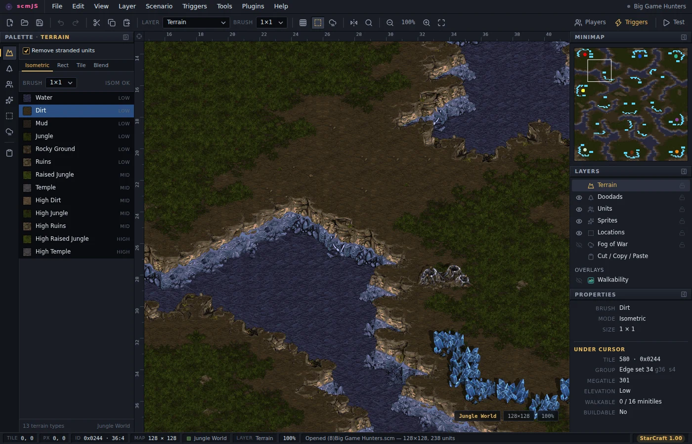

컨테이너로
최신 릴리스는 Docker 이미지로도 제공됩니다. 받아서 로컬에서 실행하려면:
docker run --rm -p 8080:80 \
ghcr.io/scm-js/scm-js:latest
그다음 브라우저에서 http://localhost:8080으로
접속하세요.
scmJS
scmJS는 TypeScript로 작성된 무료 오픈 소스 스타크래프트 1 맵
에디터입니다. 브루드 워와 스타크래프트: 리마스터의
.scm, .scx, .chk 맵을 보호된
맵까지 포함해 브라우저 탭이나 데스크톱 앱에서 열고, 편집하고, 저장할 수
있습니다.
베타 scmJS는 아직 개발 중입니다. 중요한 맵 파일은 편집하기 전에 꼭 백업해 두세요.
버그 이슈 트래커에 신고해 주세요. 에디터에서 도움말 ▸ 버그 신고 내용 복사를 누르면 이슈에 첨부할 로그를 얻을 수 있습니다.
데스크톱 앱은 에디터를 Electron으로 감싼 것으로, 몇 가지 기능이 더
있습니다. 자동 업데이트(앱의 환경 설정에서 나이틀리 채널을 고를 수
있습니다), 스타크래프트 1 설치 위치 자동 감지, 파일 연결과 '연결
프로그램' 지원입니다. 아직 코드 서명이 되어 있지 않아 Windows에서는
SmartScreen 경고가 뜨고, macOS에서는 실행하기 전에
xattr -d com.apple.quarantine이 필요합니다.
| 플랫폼 | 최신 릴리스 | 나이틀리 |
|---|---|---|
| Windows 설치 프로그램 | scmJS-windows-x64-setup.exe | 나이틀리 .exe |
| Windows zip, 설치 없이 | scmJS-windows-x64.zip | 나이틀리 .zip |
| macOS Apple 실리콘 | scmJS-macos-arm64.dmg | 나이틀리 .dmg |
| macOS Intel | scmJS-macos-x64.dmg | 나이틀리 .dmg |
| Linux AppImage | scmJS-linux-x86_64.AppImage | 나이틀리 .AppImage |
| Linux Debian, Ubuntu | scmJS-linux-amd64.deb | 나이틀리 .deb |
나이틀리 빌드는 모두 nightly.editor.scmjs.dev와 같은 빌드입니다. 모든 파일과 버전별 변경 내역은 릴리스 페이지에 있습니다.
최신 릴리스는 Docker 이미지로도 제공됩니다. 받아서 로컬에서 실행하려면:
docker run --rm -p 8080:80 \
ghcr.io/scm-js/scm-js:latest
그다음 브라우저에서 http://localhost:8080으로
접속하세요.
릴리스마다 scmJS-web.zip이 있습니다. 빌드된 번들로,
서버 기능 없이 정적 파일만 들어 있습니다. 루트에서 파일을
제공하는 곳이라면 어디에 풀어도 됩니다.
Node 22 이상이 필요합니다. 저장소를 클론하고
npm install을 실행한 뒤, 개발 서버는
npm run dev, 설치 프로그램은
npm run build:desktop으로 만듭니다.
타일셋, 유닛 그래픽, .dat 테이블은 블리자드
엔터테인먼트의 자산이며 재배포할 수 없습니다. 처음 실행하면 에디터가
블리자드에서 직접 내려받을지, 파일을 끌어다 놓을지 고르게 합니다.
데스크톱 버전은 디스크에서 파일을 먼저 찾아봅니다.
게임 데이터가 없어도 에디터는 동작하지만, 일부 기능이 제한된 상태로 실행됩니다.

자세한 사용법은 사용자 가이드(영문)에 있습니다.
레이어, 팔레트, 대화 상자가 StarEdit과 SCMDraft 2를 따르므로 익숙하게
쓸 수 있습니다. 텍스트 트리거 에디터 플러그인으로 트리거를 SCMDraft
.trg 파일로 가져오고 내보낼 수 있습니다. SCMDraft의
TrigEdit 문법을 그대로 쓰므로, SCMDraft에서 복사한 트리거를 바로 붙여
넣을 수 있습니다.